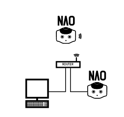
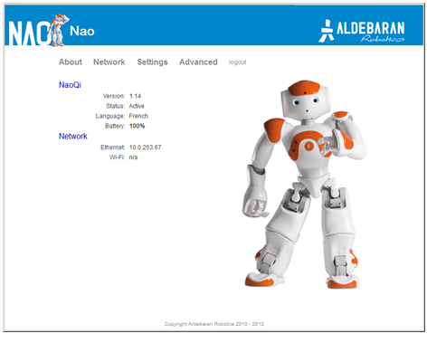
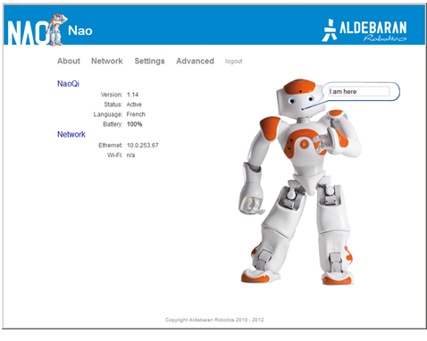

You can connect NAO to your computer using a wired or WiFi connection:
Warning
Make sure NAO is not connected with an Ethernet cable while executing movements which could pull the wire and damage the port.
| Step | Action |
|---|---|
| Turn on your NAO. | |
Remove the hatch behind his head to access to the Ethernet socket and plug the Ethernet cable. |
|
If you have a router with a spare Ethernet port:
If not:
 or |
|
Access the NAO Web page and log-in. For further details, see: How to access the NAO Web page. |
|
In the Network page, choose and configure a WiFi network. For further details, see: WiFi standard configuration. |
|
| You can now disconnect the Ethernet cable and close the hatch behind NAO‘s head. |
| Step | Action |
|---|---|
On your computer, access to the Web page of your robot. For further details, see How to access the NAO Web page.  |
|
Click NAO’s picture to make appear the speech bubble.  |
|
| Type Hello world in the speech bubble. | |
| Press Enter key. |
Your robot says “Hello world”.